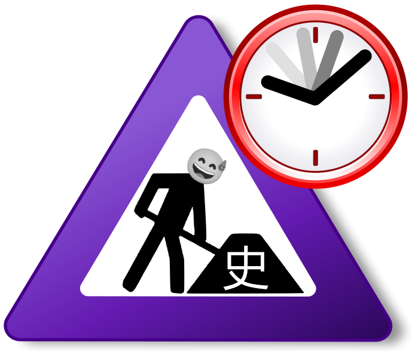

*该页面可能有点混乱
Softonic Softonic是一个不用代理就能上的外国应用下载网站，十分有用。
草Wwwwwwwwww 23333333333333333
Capoo 可爱的Bugcat
赛博九经 典笑绷麻乐急批赢嘻
Pusheen 可爱大喵喵~
绿坝娘 绿坝绿坝把你萌杀
Omori前情提要 *以下内容含剧透
一小男孩因“拉小提琴”在楼梯口与他姐吵起来了，脾气上来，一下子给他姐扇了下去。从楼上摔下，他姐死了。他“最好的”朋友帮他，伪造了一个自杀现场，好似是自己吊死在树上的。之后，大家的生活都改变了。
Omori是款好游戏，但流程有点长，耐心点。
《东脑》概括 *剧透警告
金木水火为了利，将土行封起来了。土行通过东脑吸收灵魂来引人救他。前几个人都失败了，轮到了主角“临”。经过探索与轮回转世，临成功将金木水火打败，救出了土行。
《东脑》是个短流程游戏，差不多1-2小时即可通关。
九条可怜~です ayaya ayaya~綾
曾经的期待 KooGame的狂斩三国3，Landfall的全面战争模拟器，radiant的石炉（现为社区ACE），Ludeon Studios的环世界
わ、わふー! 能美·库特莉亚芙卡（库特莉亚芙卡·安纳托利耶芙娜·斯特鲁加茨卡娅/クドリャフカ＝アナトリエヴナ＝ストルガツカヤ/Кудрявка Анатольевна Стругацкая）
解析：日厂特有的涉俄苏情节+令人生欲望的经典日式欧洲人形象=即使贫乳人气也很高的角色。
艾莉娜也干了。